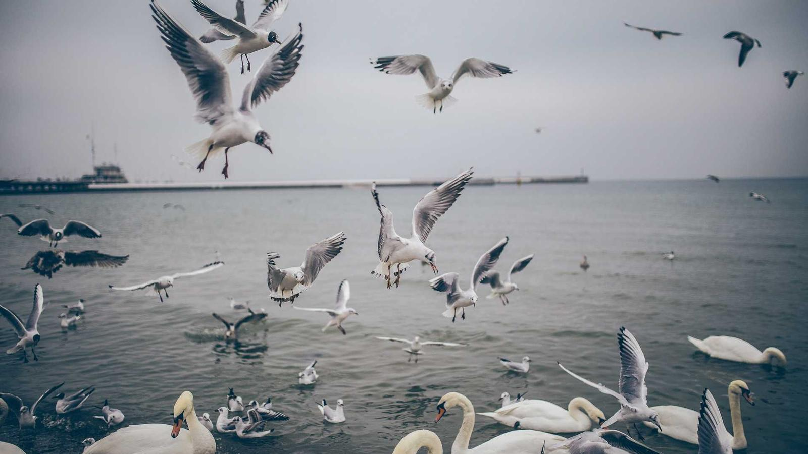
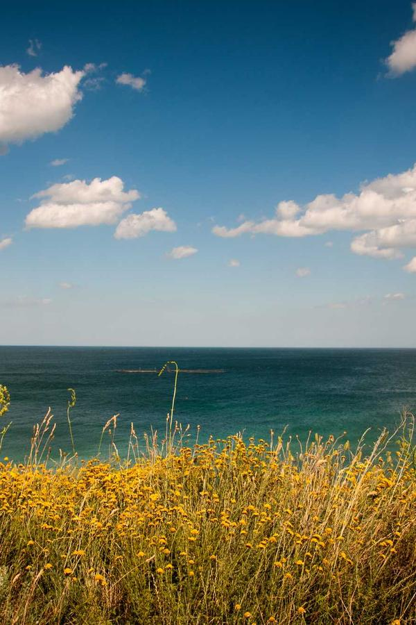
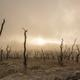
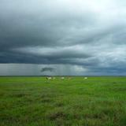

About
Recent Publications
PM2.5 Concentration Trends in Southeast Asian Cities, 2015–2024
→
Health Impacts of Transboundary Haze Episodes
→
Details
Country
Organisation
Publications
Languages
English, Malay


A members-only space for journalists from South and Southeast Asia covering climate, health, and the environment.
Sign in to access your network resources and community.
Membership is only granted to media professionals who have attended the Capacity Development Journalist Workshop hosted by Sunway Centre for Planetary Health.
A members-only community for science journalists across South and Southeast Asia — working on climate, health, and environmental issues.
210 members across 12 countries. Hover over a country to see its member count. Darker green = more members.
The Media Professionals training workshops were a core part of the Centre's work in 2025. Delivered with partners across South and Southeast Asia, the workshops focused on strengthening the quality and impact of planetary health journalism. Three intensive, in-person workshops were held in February, June and September at Sunway University, each bringing together around 30 journalists from print, broadcast, and digital media through a competitive selection process.
The sessions focused on climate, heat, and health; air and plastic pollution; and planetary health, power, and global decision-making. Journalists combined expert briefings with practical newsroom exercises, ethical discussions, and peer exchange. The emphasis was on turning complex science and policy into clear, human-centred stories, while navigating misinformation, political pressure, and editorial constraints.
A strong focus was placed on solutions-oriented and accountability reporting, using health as a lens to connect global processes with local lived experience and to amplify voices that are often overlooked. One of the most important outcomes was the formation of the Asia Pacific Planetary Health Media Professionals Network — an ongoing space for learning, collaboration, and peer support beyond the workshops themselves.
Supported by a shared resource hub and real-time communication, the network is designed to encourage sustained coverage rather than one-off stories, and to reduce professional isolation for journalists working on sensitive planetary health issues. It also creates a pathway for mentorship and follow-on training.
Sunway Centre for Planetary Health has conducted six workshops under the Planetary Health Media Professional Capacity Development Workshop series.
"The Asia Pacific Planetary Health Media Professional Network represents one of our most meaningful investments in long-term impact. By building the capacity of journalists — the people who translate complex science into public understanding — we are investing in the foundations of informed societies and accountable governance."
"Our journalists do not simply cover stories. They hold systems to account, amplify silenced voices, and connect local realities to global processes. This network ensures they are never doing that work alone."

Members making an impact in planetary health journalism across the region.
Full access is available to network members. Sign in or apply through an upcoming workshop.
Curated articles, guides, research, tools, and workshop materials from across the network.
This resource was curated for members of the SCPH Media Professional Network. It provides journalists with actionable information on reporting complex planetary health topics with accuracy and context.
Topics covered include background science, data sources, expert contacts, and ethical considerations for reporting on environmental and health issues across Asia Pacific.
Journalism and research produced by network members across South and Southeast Asia.
A long-form investigation into how high overnight temperatures in Kuala Lumpur are disproportionately affecting elderly residents and outdoor workers, with data from hospital heat-related admissions.
Ground-level investigation into plastic waste dumping along the Citarum River, Indonesia's most polluted waterway, covering health impacts on downstream communities and government accountability gaps.
Peer-reviewed analysis of correlation between fine particulate matter concentrations and paediatric emergency admissions in three Metro Manila hospitals, 2022–2025.
Feature on how Bangkok's urban heat island effect is compounding health risks for street vendors and construction workers during record-breaking summer temperatures.
Op-ed examining how social media platforms amplify inaccurate claims about climate tipping points and what journalists can do to counter misleading narratives without oversimplifying the science.
Analysis of gaps in publicly available air quality monitoring data across ASEAN countries, with recommendations for standardised reporting frameworks to support health journalism.
This piece was published following the author's participation in SCPH's Capacity Development Journalist Workshop. It draws on regional health data, peer-reviewed climate research, and on-the-ground reporting.
The article presents a nuanced picture of the issue for a general audience, using context and expert commentary to bridge the gap between science and public understanding.
Welcome to Virtual Café where members can connect and discuss on planetary health topics, share story ideas, find collaborators, and support each other's work.
Subject-matter experts available for interviews, background briefings, and collaboration.
JPG or PNG · Max 5 MB
Upcoming workshops, webinars, and network events. Open to the public.
Kuala Lumpur, Malaysia
Singapore
Manila, Philippines
Jakarta, Indonesia
Bangkok, Thailand
Kuala Lumpur, Malaysia
Recordings, slides, and transcripts from past SCPH webinars. Free and open to all.
Members of the Asia Pacific Planetary Health Media Professional Network — journalists, reporters, and media practitioners from across the region.

Full directory of all 210 members across the Asia Pacific network.